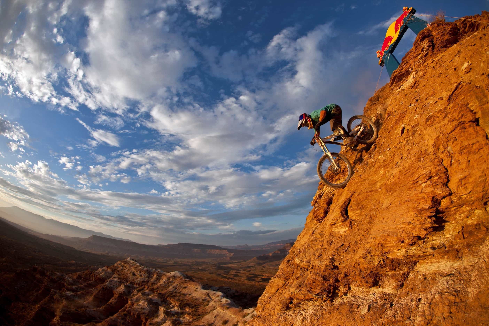

Kyle is an entrepreneur and nomad who has been living abroad since 2016. He blogs at This Is Trouble. Follow him on Facebook.


The smell of the woods and fresh running water. The hurt and pain of climbing uphill. The thrill as you cut back and forth amongst the trail, flicking your handlebars with precision to avoid the obstacles in your path (or, depending on your level of crazy, to run them right over). The way your stomach drops as you launch off of a jump. The adrenaline coursing through your veins as you tackle the challenges of your local single track trail.
Welcome to the world of mountain biking.
For fellow adrenaline junkies, mountain biking is a fantastic way to get your fix of crazy, nearly-death-defying action. Compared to other adrenaline activities, such as skydiving and bungee-jumping, mountain biking is much more convenient and accessible for the majority of people. I have half a dozen trails within a half hour drive of my house, and I live in the middle of a big city (San Diego).
In addition to that, mountain biking gives you a certain level of control that other adrenaline sports just don’t give you. It is you who is responsible for maintaining your bike, picking the right line down the trail, and for deciding how many risks you want to take.
One of the best things about mountain biking though is that it simply makes you feel like a man.
There’s nothing quite like going off a jump, or around a sharp corner, and realizing…you don’t really know what’s on the other side of it. While I would not consider myself a huge daredevil (in comparison to some of my nutty friends), there is a certain thrill you get by taking a risk like that. It makes you feel alive, knowing that one bad maneuver, or slightly misplaced tire, could send you into a nasty crash.
You should always ride within your abilities, but you should always push those abilities to the limit. You know what comfort is? Mediocrity simply hiding in disguise. Being out there in the dirt and pushing yourself to the brink will allow you to tackle the rest of the challenges in your life with the swagger you need to be successful.
As I’ve written in my articles about preparing for your first triathlon and racing in your first triathlon, I’ve been doing endurance sports for quite a few years. However, there are few things that put me into the red zone faster than a hilly cross-country mountain bike ride.
In mountain biking, there tends to be very few points in which you aren’t going either up or down. The places that are flat are boring. Either you’re climbing upwards at steep gradients, or you’re descending downhill, which usually has your heart rate up, too.
Mountain biking is a great way to get in some quick and dirty cardio, and I personally have always found that sprints and intervals get me into far better shape than slow and steady training. Unless you’re racing competitively though, don’t push yourself so hard that you don’t enjoy it.
Last weekend, for example, I went out riding with three buddies from work. We started at the bottom, and climbed our way to the top of the mountain — roughly 6.5 miles with an average gradient between 12-13%. It was not an easy climb. After we went down the hill, we spent the next couple hours shuttling ourselves back to the top, rotating the two cars, so that we could just point our handlebars downhill and take…risks.
They would’ve been happy to shuttle from the start, but I insisted we’d better earn all the free downhill rides by climbing it at least once.
Pictures like the above depict the amazing level of technology that is contained in a 30 pound mountain bike these days. You’ve got hydraulic brakes, shocks, and parts of carbon fiber scattered throughout the frame and components. My 2013 mountain bike probably contains more technology in it than the car I drove in college.
There is something very satisfying about maintaining, practicing, and mastering your mountain bike. Those of you with sports cars will understand. It’s as if you speak the same language – in which your bike understands the slight movements and adjustments you make, and it does them in sync with you, rather than fighting you. You feel one with your machine.
While there certainly are girls that are into mountain biking, and some that are damn fast at it, mountain biking is a dominantly male sport. Many of the pussy-whipped men at my office look forward to our weekly rides, because it’s practically the only time they’re allowed to leave the house. It’s understood that it’s a time for to get dirty, sweat, and be men. Afterwards, we all drink beers and bullshit.
If you’re really badass, you can fill your hydration pack with beer and drink that throughout your ride.
Beer, friends, fancy bikes, and dangerous stunts.
What more do you need as a man?
If this article intrigued you to check our your local trail, here’s a quick guide to acronyms of the different types of mountain bikes you will encounter. Many local bike shops have “trail demo” days in which they bring various bikes out to the trail for you to test ride, and that will be a better test of what is best for you than any guide you’ll find on any website.
These are the lightest bikes you’ll encounter on the market and are designed for what is commonly referred to as cross-country riding. These bikes handle moderate levels of terrain and will climb better than the other types. They contain both hardtail (no rear suspension) and full-suspension models.
These are very similar to XC bikes, but with more cushion. They will handle downhill descents and soak up more feedback from the trails. I’d consider these to be the most versatile type of mountain bikes.
FR/DH (Freeride/Downhill)
Not for the faint of heart. These are for the crazies that want to jump off cliffs and live to tell the tale. Not the first mountain bike you ever want to ride.
AM (All Mountain)
This is what I ride, personally. AM bikes are beefed up more than Trail bikes to handle the downhill, but are still designed to climb well due to the way the geometry is often positioned. In addition, many of them have adjustable, on-the-fly gadgets to control the way the bike feels. If I flip the knob up, it stiffens the rear suspension, which makes climbing easier. When I’m ready to go downhill, I flip the knob down and my rear shock maxs back out.
So, take a risk and head out to your local trail. Being a man is all about taking risks and living live on the edge.
Ride safe, but more importantly, ride hard.

Read More: Stop Being A Pussy
{kind=link}
{kind=link}
{kind=link}
{kind=link}